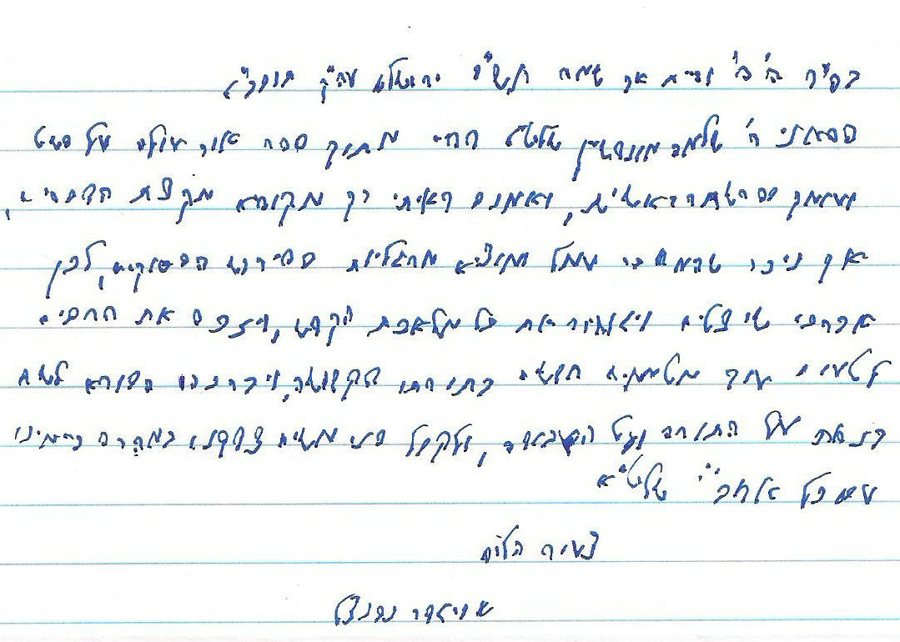
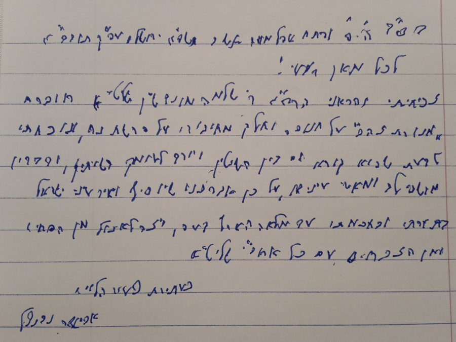
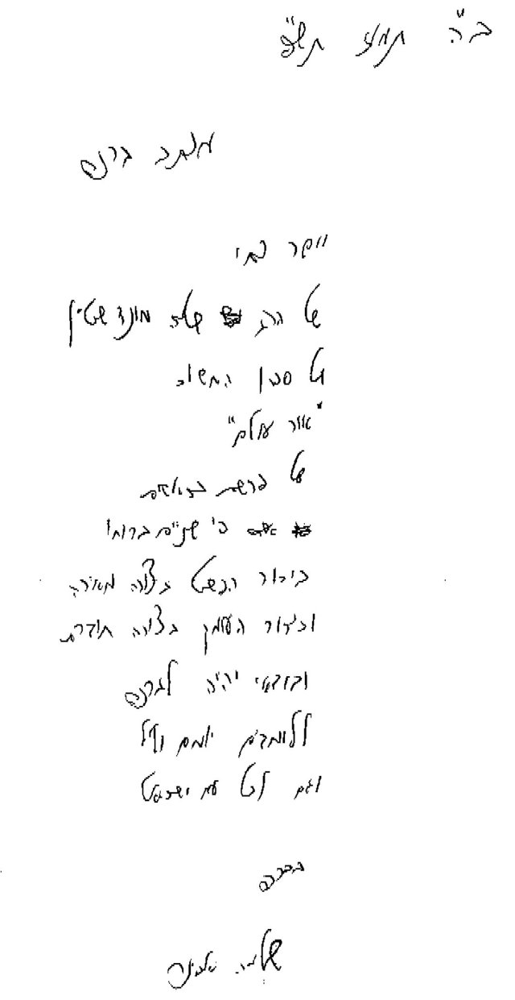

על הספרים
ספר לכל פרשה
כל ספר מוקדש לפרשה אחת, ומחולק לשערים לפי נושאי הפרשה.
פסוק אחר פסוק
הביאור עובר על הכתובים לפי סדרם, וניתן לנווט באתר ישירות לכל פסוק.
חז״ל, פרשנים וחידושים
דברי חז״ל ומפרשי המקרא לצד הצעות חדשות להבנת הפשט והעומק.


מכתבי ברכה לספרים
מכתבי ברכה מאת הרב אביגדר נבנצל
רב העיר העתיקה בירושלים
לספר "אור עולם" על פרשת בראשית

בס"ד ה' פ' והיית אך שמח תש"פ ירושלים עיה"ק תובב"א
הראני ר' שלמה מונדשיין שליט"א דפוס מתוך ספר אור עולם על פשט ועומק בפרשת בראשית, ואמנם ראיתי רק מקופיא מקצת הדברים, אך ניכר שהמחבר עמל ומוציא מרגליות בפירוש הפסוקים, לכן אברכנו שיצליח ויגמור את כל מלאכת הקדש, ויזכה את הרבים לטעום עוד מטעמים חדשים בתורתו הקדושה, ויברכהו הבורא לשבת בנחת על התורה ועל העבודה, ולקבל פני משיח צדקנו במהרה בימינו עם כל אחב"י שליט"א
צעיר הלווים
אביגדר נבנצל
לחוברת "מנורת זהב" ולספר "ברית עולם" על פרשת נח

בס''ד ה' פ' ופתח אהל מועד תשבו תשפ''א ירושלם עה''ק תובב''א
לכל מאן דבעי!
זכיתי והראני הרה''ג ר' שלמה מונדשיין שליט''א חוברת 'מנורת זהב' על חנוכה וחלק מחיבורו על פרשת נח, ונוכחתי לדעת שהוא קורא גם בין השיטין, ויורד לעומק השיתין, ודבריו משמחי לב ומאירי עיניים, על כן אברכנו שיוסיף ויאיר עיני ישראל בתורתו ובחכמתו עד מלאה הארץ דעה, ויזכה לאכול מן הפסחים ומן הזבחים עם כל אחב''י שליט''א.
כעתירת צעיר הלויים,
אביגדר נבנצל
מכתב ברכה מאת הרב שלמה אבינר
ראש ישיבת עטרת כהנים ורב היישוב בית אל (לשעבר)
לספר "אור עולם" על פרשת בראשית

ב"ה תמוז תש"פ
יישר כחו של הרב שלמה מונדשיין על ספרו החשוב "אור עולם" על פרשת בראשית, פי שניים ברוחו - בירור הפשט בצורה מאירה, ובירור העומק בצורה חודרת, ובוודאי יהיה לברכה ללומדים יומם וליל, וגם לכל עם ישראל.
בברכה,
שלמה אבינר
מכתבי ברכה מאת הרב יוסף צבי רימון
רב קהילת אלון שבות דרום והמרכז האקדמי לב
לספר "אור עולם" על פרשת בראשית
בס"ד ט"ו במנחם אב ה'תש"פ
ראיתי את הספר "אור עולם" על פרשת בראשית, שכתב ר' שלמה מונדשיין הי"ו, קראתי חלקים מהספר ונהניתי מאוד.
זכה המחבר להוציא ספרים מרשימים על ההגדה ועל ההושענות, וכעת ספר מרשים נוסף. יש בספר עומק בהבנה לשונית של מלים, ביטויים ופסוקים בפרשה, שילוב של פשוטי המקראות וניסיון לתת משמעות אמונית ומחשבתית לדברים אלו. יש כאן לימוד מרתק, המתייחס לגדולי הפרשנים בכתיבה רהוטה, מעניינית ומחדשת.
מרשים לראות ספר שלם על פרשה אחת! בע"ה שתזכה להמשיך ולכתוב על פרשות נוספות, ולזכות את הציבור בזווית נוספת בלימוד תורה.
ברכת ה' עליכם,
יוסף צבי רימון
לספר "ברית עולם" על פרשת נח
בס"ד, י"ז באייר ה'תשפ"א, ל"ב למטמוני"ם
עברתי על חלקים מספרו של הרב שלמה מונדשיין הי"ו על פרשת נח.
מכיר אני את ספריו הקודמים, ומתפעל מאוד מהכתיבה הרצינית והעמוקה בנושאים מגוונים.
יש הלומדים את פרשת השבוע בפשוטם של מקראות ויש הדורשים בה דרשות רוחניות וחסידיות. בספר זה ישנו ניסיון לשלב בין הדברים. לרדת לעומקם של הפסוקים, לנסות ולדייק במבנה, במלים ובלשון, ומתוך כך לנסות להתרומם ליסודות אמוניים ורוחניים.
הספר כתוב בצורה בהירה ונעימה, ומאפשר ללמוד את הפרשה בצורה בהירה ועמוקה כאחד.
בע"ה שיזכה הרב המחבר להמשיך ללמוד ולכתוב עוד חיבורים רבים בשמחה ובטוב לבב.
יוסף צבי רימון
מכתבי ברכה מאת הרב פנחס מונדשיין
דיין בבית הדין הרבני בנתניה ור"מ בישיבת מרכז הרב
לספר "אור עולם" על פרשת בראשית
ב"ה עש"ק לסדר "בנים אתם"
לבני אהובי מלא ברכת ד' הרב שלמה הי"ו!
"בן חכם ישמח אב", ולכן רחב לבבי בראותי את חיבורך רב הכמות והאיכות על פרשת בראשית. כמעשיך בראשונה ובשנייה, בשני ספריך הקודמים, כך מעשיך בשלישי, התבוננות מעמיקה ודקדקנית והפעם בפסוקי תוה"ק לאור פירושי רבותינו הראשונים והאחרונים. לאחר שמילאת כריסך בש"ס ופוסקים ומשכת בשבט סופר במערכות תלמודיות עמוקות, בהגיוני הלכה מפורטים ומדוקדקים, בפרשנות פיוט ומדרש, כעת רחש לבבך להעמיד בירורים עמקניים בתורה שבכתב. ב"ה כבר מינקותך נשאת את ליבך ללימוד והעמקה בכל שטחי התורה, שעות של לימוד משותף איתך בש"ס ופוסקים היוו מקור עונג כמו גם שעות לימוד בדברי הנביאים, ובטוח אני כי מחיבורך זה ישאבו התרגלות בדרך העיון כל מבקשי אמת.
לחיבת הקודש אעיר בקצרה ביחס לפסוק "עפר מן האדמה" שהבאת לגביו את פירוש רש"י בשם המדרש: "צבר עפרו מכל האדמה, מארבע רוחות" וכו'. נראה שההדגשה שבמדרש "מכל האדמה" באה לומר לא עניין כמותי, אלא שנברא מהאדמה כ"כלל" ולא מהאדמה כ"פרט", היינו מיסוד האדמה (מתוך ארבעת היסודות) ולא מגוש אדמה פרטי. ההדגשה כי נברא מיסוד האדמה באה לומר שעניינו כ"אדם" גזור מיסוד ה"אדמה" כאשר היסוד מתאפיין בתכונות ייחודיות, כך שהתכונות המאפיינות את היסוד האדמתי הן תכונות האדם, וכפי שהרחיב המהר"ל בתחילת "תפארת-ישראל" ודו"ק. מברכך בברכת אב ומתפלל להמשך הצלחתך בתורה וביראת שמיים מתוך שמחה וטוב לבב.
באהבה רבה
אבא
לספר "ברית עולם" על פרשת נח
ב"ה אייר תשפ"א
לבני אהובי מלא ברכת ד' הרב שלמה הי"ו!
"בן חכם ישמח אב", ולכן רחב לבבי בראותי את חיבורך זה על פרשת נח, הממשיך את קודמו על פרשת בראשית, וכמעשיך בראשונה כך בשנייה, התבוננות מעמיקה ודקדקנית בפסוקי תוה"ק לאור פירוש רבותינו הראשונים והאחרונים.
בטוחני כי כל הלומד בספריך ישאב מים זכים שירוו צמאון כל מעמיק וחוקר. בקיאותך והעמקתך בשטחי התורה השונים, ש"ס, פוסקים, הלכה ואגדה ניכרים היטב בפרקי ספריך ובע"ה ימשיכו מעיינותיך להיות מופצים ומתברכים.
עשרת הדורות אשר מנח ועד אברהם עומדים בזרימה הפוכה מאלו שהיו מאדם-הראשון ועד נח, בעוד שבראשונים מסיימת התורה כל דור ב"וימת", הרי באחרונים מסתיים כל דור ב"ויולד בנים ובנות", וכפי שסיומם בא לידי שוני והבלטה במשנה ב'אבות', בין הכליה שסיימה לראשונים לבין נטילת שכר כולם באחרונים; בעוד בראשונים עומד נח בניגוד לדורות שקדמו, עומד אברהם כבירור האחרונים. הבירור הנפלא שביררת בספרך הקודם את הפירוד שבדורות הראשונים ובבריאה כולה בחינת "עשרה מאמרות", מתעלה בספר זה לבירור הבריאה של "במאמר אחד" המיתמצת באברהם אבינו.
מברכך בברכת אב ומתפלל להמשך הצלחתך בתורה ויר"ש מתוך שמחה וטוב לבב.
באהבה רבה
אבא
לספר "אהבת איתן" על פרשת לך לך
ב"ה סיון תשפ"ב
לבני אהובי מלא ברכת ד' הרב שלמה שליט"א!
"בן חכם ישמח אב", וכמעשהו בראשונה ובשנייה כך מעשהו בשלישית, יצירה עמוקה ודקדקנית הסוללת מסילות בעיון התורה ומפרשיה שראויה לפאר ולעלות על שלחן מלכים, מאן מלכי רבנן, ולהשכיל ולפתוח שערים בפני כל צורב ולומד.
בקיאותך, יכולת העמקתך וכשרון ההסברה בחלקי התורה השונים, ניכרים היטב בספריך ובע"ה יה"ר שימשיכו מעיינותיך להיות מופצים ומתברכים. בפרשת "לך-לך", עוסק ספרך זה, תחילת התרקמות האומה הישראלית, במבט עליון על אבינו הראשון, כשההבטה בכפליים, כלשונו של ישעיהו, הבטה על העצם ועל הגילוי, דרך הפסוקים והמילים הנערכים למערכה כללית.
מברכך בברכת אב ומתפלל להמשך הצלחתך בתורה ויראה מתוך שמחה וטוב לבב.
באהבה רבה
אבא
לספר "אהבת הקדמונים" על פרשת וירא
בע"ה מנחם אב תשפ"ג
לבני אהובי מלא ברכת ה' הרב שלמה שליט"א
"בן חכם ישמח אב", וכמעשהו בראשונה בשנייה ובשלישית כך כעת ברביעית, חיבורך הנפלא לפרשת וירא, יצירה עמוקה ודקדקנית הסוללת מסילות בעיון התורה ומפרשיה, שיש בה כדי לפתוח שערי עיון בתורה שבכתב בפני כל צורב ולומד. זכית ומילאת כרסך בש"ס ופוסקים, ואף בבקיאות נפלאה בתנ"ך הראית כוחך כאשר זכית בחידון התנ"ך האחרון למבוגרים כחתן התנ"ך; וכעת כל זה נבלל בתוך חיבורך, המצטרף לאחיו הקודמים ומגלה פנים חדשות ועמוקות בפסוקי התורה.
מברכך בברכת אב, ומתפלל להמשך הצלחתך בתורה ויראה, מתוך שמחה וטוב לבב.
באהבה רבה, אבא
לספר "אם בישראל" על פרשת חיי שרה
בע"ה אייר תשפ"ד
לבני אהובי מלא ברכת ד' הרב שלמה שליט"א
ברגשות גיל שמח אני לברכך על חיבורך הנפלא לפרשת "חיי-שרה" שמצטרף לקודמים לו, חיבורים אשר הרוו נפש צמאה, ע"י בירור והעמקה בפרשנות רבותינו לפרשות חומש בראשית. פרשה זו אמנם פותחת במות שרה אולם אעפ"כ תו של חיים משוך עליה וקרויה בשם החיים, מפגישה אותנו עם עומק החיים המתגלה דווקא עם הסתלקותו של הצדיק אשר "שבק חיים לכל חי", בעזיבתו את החיים, כביכול, עזב והותיר לנו חיים איתם ניתן להיפגש מעל כל מגבלות עולם החומר בו הופיעו עד עתה.
בכוחך כי רב המלא ברכה השופעת מחלקי התורה השונים בהם אתה הוגה ורואה ב"ה ברכה בעמלך, מפליא אתה לדקדק ולחשוף מטמוניות מאותם מעיינות בלתי פוסקים הנובעים מפסוקי התורה ולהגישם לצבור הלומדים, בבהירות ובנעימות.
מברכך בברכת אב ומתפלל להמשך הצלחתך בתורה ויראה, מתוך שמחה וטוב לבב.
באהבה רבה, אבא
לספר "כטל לישראל" על פרשת תולדות
בע"ה ערב היום הקדוש "ולא אחד בהם" תשפ"ה
לבני מחמדי מלא ברכת ד', הרב שלמה שליט"א!
ברגשי שמחה וגיל בא אני לברכך ברכת אב לכבוד השלמת חיבורך רב הכמות והאיכות על פרשת "תולדות"; כמעשיך בראשונות, בירור, דיוק והעלאת מטמוניות בלשונות ורעיונות הפסוקים לאור רבותינו הראשונים, כך מעשיך באחרונה. ברם, טעם מיוחד הוא לבוא בברכת אב בכרך זה העוסק בתולדות ובהמשכיות המשפחה מאב לבן. יש ובמבט שטחי מבטם של "ליצני הדור" באים ואומרים "מאבימלך נתעברה שרה", שהרי כיצד מי שמידתו מידת הדין, יכול לצאת ממי שמידתו חסד, אולם גם התבוננות זו שהיא מנת חלקו של "כל השומע" שדוקא הוא "יצחק לי" הרי שמי שלא יסתפק בשמיעה אלא יראה את הדברים ויתבונן בהם, הר שיראה ש"צר קלסתר פניו של יצחק דומה לאברהם", ומידה תרומה ממידה וענף יוצא מענף.
מי יתן, ותזכה להמשיך לישב ולחבר שאר חיבורך החשובים, ללמוד בשמחה ובטוב לבב ולעלות מעלה, אל מול דבריו הנוקבים של הרמב"ן בפרשה המדוברת "כי אין חפץ בכסילים רק שיאכלו וישתו ויעשו חפצם בעתם ולא יחושו ליום מחר", הרי ש"זה כנגד זה עשה האלהים" ואשריך ואשרי חלקך. חותם באהבת אב
אבא
לספר "אבן ישראל" על פרשת ויצא
ב"ה
כוס של ברכה שלוחה לבני יקירי מלא ברכת ד' הרב שלמה שליט"א, "בן חכם ישמח אב".
שוב שמחתי מאד לראות במעשי ידיך ההולכים ונמשכים למן חיבוריך הראשונים ועד עתה, והפעם בספרך החדש על פרשת "ויצא".
פרשה זו המליאה וגדושה במעשי אבינו יעקב, מלאה ב"סבוכים", כלשון רבנו הרצי"ה קוק זצ"ל, המאירים ומדריכים את הופעת האומה לתולדותיה, בתוך מחשכי המציאות, בני יעקב היודעים לתקן ולהתפלל את תפילת הערב, תפילת החשכה והלילה.
עיקר ההתבוננות בסוגיית הסיבוכים, הוא רכישת ההבחנה והדיוק בגבולות, היכן מתחיל והיכן מסתיים כל תחום ועניין, גם בין הדברים המצרניים זה לזה, אשר בטשטוש אותה הבחנה, באים זה בגבולו של זה, מתפשטים מעבר למידתם ובכך טוב ורע משמשים בערבוביה.
יכולתך הנדירה אשר בורכת בה, להגדיר, להקשות ולפרק, ולחשוף את ההארה שבפסוקים, ובפירושי רבותינו הראשונים, מהווה אוצר בלום לכל לומד אשר חשקה נפשו בהעמקת והתרת פקעת הסבך הניבטת במבט ראשוני על הפרשנים. ברכת ד' זו, היא מעיין יצירתך אשר מנביע את מימיו הזכים בשבילי ספר זה המצטרף לאלו שקדמוהו, לסדרה שיטתית ומובנית.
מברכך שתמשיך לשבת על התורה ועל העבודה, להוציא לאור עוד יצירות מפרי רוחך, והכל מתוך שמחה וטוב-לבב.
אביך אוהבך
לספר "פני אדם" על פרשת וישלח
ב"ה ערב חג מתן תורתנו תשפ"ו
לבני אהובי מלא ברכת ד' הרב שלמה שליט"א!
"בן חכם ישמח אב", וכמעשהו בראשונה ואילך כך מעשהו באחרונה, יצירה עמוקה ודקדקנית הסוללת מסילות בעיון התורה ומפרשיה שראויה לפאר ולעלות על שלחן מלכים, מאן מלכי רבנן, ולהשכיל ולפתוח שערים בפני כל צורב ולומד.
בקיאותך, יכולת העמקתך וכשרון ההסברה בחלקי התורה השונים, ניכרים היטב בספריך ובע"ה יה"ר שימשיכו מעיינותיך להיות מופצים ומתברכים. בימים הרי-גורל אלו, בהם מדינת ישראל מנהלת מערכה צבאית ומדינית מפוארת בעולם כולו, מתרחב הלב לעיין בדקדוק בפרשת "וישלח" שהיא, כפי שמקדים הרמב"ן בפרושו לה, "נכתבה הפרשה הזאת להודיע כי הציל הקב"ה את עבדו וגאלו מיד חזק ממנו, וישלח מלאך ויצילו, וללמדנו עוד שהוא לא בטח בצדקתו והשתדל בהצלה בכל יכולתו ויש בה עוד רמז לדורות כי כל אשר איר לאבינו עם עשו אחיו יארע לנו תמיד עם בני עשו". הנסים הגלויים שאנו זוכים לראות דבר יום ביומו נותנים משמעות מיוחדת להבנת דברי רש"י בריש הפרשה "מלאכים ממש", אותה מלאכיות וניסיות אלוקית מתגלה לפנינו כדבר הכי ממשי שעומד מולנו. הלא-ממשי, כביכול, מתגלה כ"ממש", ה"מלאכים" הם ה"ממש" הגלוי מולנו, עד כי גם הפחות שבאומות יכול להצביע באצבע ולומר שירה. כמה גדולה היא אותה השירה כשבוקעת ועולה מתוך "השירה הזאת", תורתנו הקדושה שבזו הפרשה, פרשת התמודדות ישראל והעמים, בה העמקת והעלית מרגליות יקרות.
מברכך בברכת אב ומתפלל להמשך הצלחתך בתורה ויראה מתוך שמחה וטוב לבב.
באהבה רבה
אבא
לספר "יסוד עולם" על פרשת וישב
בס"ד תשרי תשפ"ז
לבני אהובי מלא ברכת ד' הרב שלמה שליט"א
ברגשות גיל שמח אני לברכך על חיבורך הנפלא לפרשת וישב, המצטרף לקודמים לו, חיבורים אשר הרוו נפש צמאה, ע"י בירור והעמקה בפרשנות רבותינו לפרשות חומש בראשית. ספרך זה היוצא לאור לאחר זמן זמנים טובא בו זכינו לראות ישועות ונסים גדולים, מאז הטבח הנורא, יש בו כדי להאיר את מעשה האבות שהוא סימן לבנים. את "ביקש יעקב לישב בשלוה" שמביא רש"י בתחילת הפרשה יש לראות לא רק במובן הפרטי אלא כבקשת מימוש האידאל השלם כבר עתה ומיד, אולם רצונו של מסובב הסיבות היה אחר, והוא להוליך את יעקב ואת בניו בדרך ארוכה שאין בה מן השלוה אך יש בה כדי לכלול ולהעלות את המציאות כולה אל האידאל השלם.
בכוחך כי רב המלא ברכה השופעת מחלקי התורה השונים בהם אתה הוגה ורואה ב"ה ברכה בעמלך, מפליא אתה לדקדק ולחשוף מטמוניות מאותם מעיינות בלתי פוסקים הנובעים מפסוקי התורה ולהגישם לצבור הלומדים, בבהירות ובנעימות.
מברכך בברכת אב ומתפלל להמשך הצלחתך בתורה ויראה, מתוך שמחה וטוב לבב.
באהבה רבה, אבא